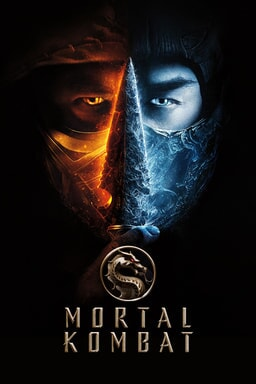

MORTAL KOMBAT
MMA fighter Cole Young, accustomed to taking a beating for money, is unaware of his heritage—or
why Outworld's Emperor Shang Tsung has sent his best warrior, Sub-Zero, an otherworldly
Cryomancer, to hunt Cole down. Fearing for his family's safety, Cole goes in search of Sonya Blade
at the direction of Jax, a Special Forces Major who bears the same strange dragon marking Cole was
born with. Soon, he finds himself at the temple of Lord Raiden, an Elder God and the protector of Earthrealm,
who grants sanctuary to those who bear the mark. Here, Cole trains with experienced warriors Liu Kang,
Kung Lao and rogue mercenary Kano, as he prepares to stand with Earth’s greatest champions against the
enemies of Outworld in a high stakes battle for the universe. But will Cole be pushed hard enough to unlock
his arcana—the immense power from within his soul—in time to save not only his family, but to stop Outworld once and for all?